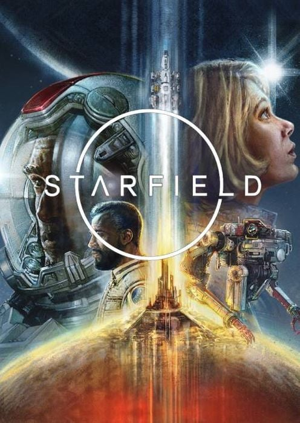

Bienvenido a Mundo Gamer, tu sitio de confianza para descubrir, informarte y disfrutar sobre el mundo de los videojuegos.
🎮 Últimos Lanzamientos
| Juego | Género | Fecha | Imagen (Click para ir a página oficial) |
|---|---|---|---|
| ARC Raiders | Shooter Cooperativo | 2025 | |
| Starfield | RPG Espacial | 2023 |  |
| Alan Wake 2 | Terror Psicológico | 2023 |  |
| Final Fantasy XVI | RPG | 2023 |  |
| Hades II | Roguelike | 2024 |
💬 Frase del Día
"A man chooses, a slave obeys." (Bioshock 2007)
- Andrew Ryan
Esta frase, dicha por Andrew Ryan, es una de las más famosas del juego y explora temas de libre albedrío y determinismo en el contexto de la historia.
Contexto:
Andrew Ryan, el creador de la ciudad de Rapture, en un momento crucial del juego. Ryan representa la ideología del libre albedrío, donde cada individuo debe ser capaz de tomar sus propias decisiones sin restricciones. En este momento, la frase resalta su creencia de que las personas tienen el poder de elegir, pero también señala que aquellos que no lo hacen son simplemente esclavos de sus circunstancias.
Significado:
La frase es una reflexión filosófica sobre el control y la libertad. Ryan la utiliza para desafiar la noción de que el destino de una persona puede estar determinado por otros. Al mismo tiempo, es un golpe a la idea de que, al final, todos somos responsables de nuestras elecciones. En el contexto de la trama, se utiliza como una justificación para las acciones extremas de Ryan, al querer imponer su visión de un mundo donde solo los que eligen por sí mismos tienen valor.
Impacto:
Es uno de los momentos más poderosos de BioShock, ya que refleja el dilema central del juego: realmente somos libres de elegir? Esta frase se vuelve aún más compleja cuando los jugadores descubren que, en realidad, el protagonista ha sido manipulado todo el tiempo. Se convierte en una crítica a la ilusión de la libertad en un mundo donde las decisiones pueden ser influenciadas o controladas por fuerzas externas.
📌 Info Rápida
Nombre: The Witcher 3 Tipo: RPG de mundo abierto Disponible en todas las plataformasVersión beta ya no disponibleVersión definitiva actualizada 50GB de instalación mínima *Incluye todos los DLC
📚 Categorías
- Acción
- Aventura
- Simulación
- Indie
- Cyberpunk 2077
- Red Dead Redemption 2
- Resident Evil 4 Remake
📖 Géneros Explicados
- RPG
- Progresión de personaje y decisiones narrativas.
- FPS
- Disparos en primera persona.
- Survival
- Supervivencia con recursos limitados.
🚀 ARC Raiders: Impresionante Tech Demo 2
El pasado 30 de abril, Embark Studios dio inicio a la segunda prueba técnica pública de ARC Raiders, un shooter de extracción PvPvE que se desarrolla en un futuro distópico donde la humanidad vive bajo tierra debido a la amenaza de máquinas conocidas como ARC. Este test, que se extendió hasta el 4 de mayo, marcó un hito al abrir el acceso a jugadores de PC, PlayStation 5 y Xbox Series X|S, ampliando la participación respecto a la prueba anterior limitada a PC .
🔥 GTA VI: Segundo Tráiler enciende el hype
Rockstar Games ha liberado el segundo tráiler oficial de Grand Theft Auto VI, revelando aún más detalles del esperado regreso a Vice City. Con una calidad visual impresionante, nuevas pistas sobre la historia de los protagonistas Lucia y Jason, y un ambiente que mezcla crimen, redes sociales y sátira americana, el video ha vuelto a romper récords en YouTube. Este adelanto confirma la ambición del proyecto y deja claro que el lanzamiento de GTA VI será uno de los eventos más importantes de la industria.